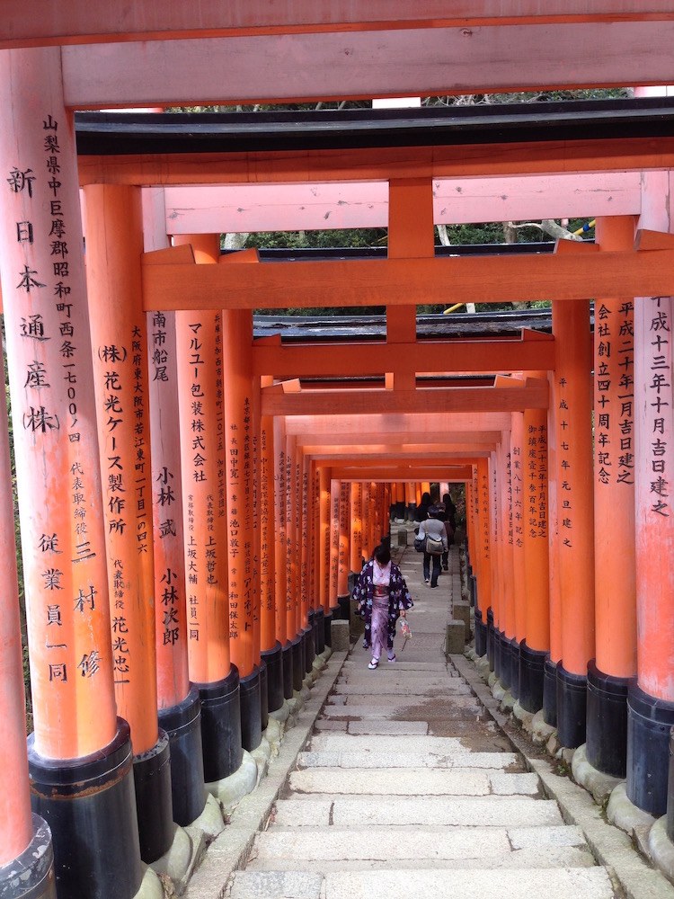
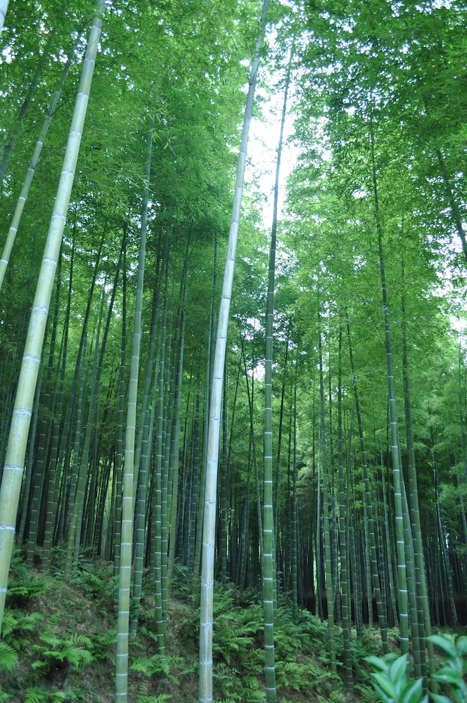
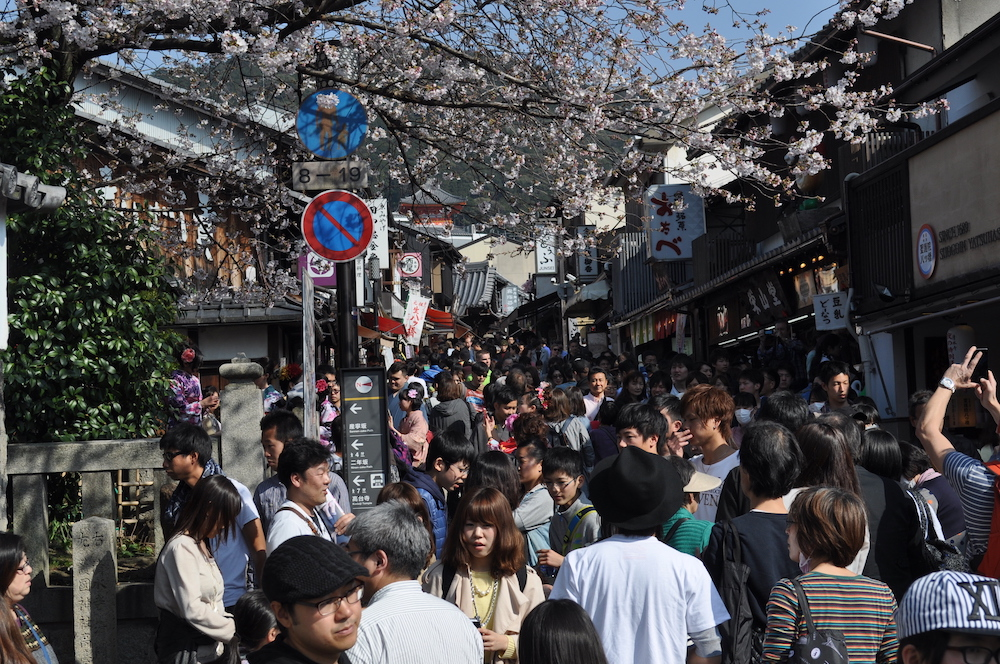

Many people visit Kyoto for its rich history and culture. If you went to Japan and didn't visit Kyoto, at least for a couple of days, it would be unusual. Temples and shrines are not the only draw to Kyoto; the contrast between the seasons make it feel like you are rediscovering the city each time. Very few cities have such stark divides. During our two years in Japan, we were lucky enough to visit Kyoto in all four seasons and no shock here, spring and autumn are the most beautiful. The drawback to these periods is that they are also the most crowded. Personally, I felt the crowds created more of an atmosphere, seeing people from all over the world appreciating the beauty of the city was very uplifting and made me feel like I was participating in something larger, something special. Still, I can understand why some would be put off by the crowds as rambling through the city without getting whacked by a selfie stick or umbrella is quite an accomplishment.
Summer. My least enjoyable time in Kyoto was during the sweltering and humid summer; sightseeing was exhausting, and so at times, the air-conditioned restaurants could be more enticing than the ancient shrines. We went at the end of July because our family came to visit us and understandably wanted to see the city. Knowing how unbearably hot it can get there was a concern, but having survived Jinan, known as one of the furnaces of China, we thought we could handle it. With our hand fans and factor 80 in tow, we toured the city. Hiring a tour guide helped, as we didn't wander aimlessly in the high temperatures and got to see a lot in a limited time. We even managed to visit Nara for half a day, similar to Kyoto but older and smaller with the addition of deer roaming freely. Locals on hand flogging deer feed to anyone who doesn't mind having their clothes ransacked by the less-than-domesticated animals. Some deer bow very politely when you show them the feed, but all pleasantries go out of the window after that first nibble, much to our entertainment.
One of the top attractions in Japan is Fushimi Inari, the tour guide said that he was unsure why it had become more popular than other sights, but I could see why. The shrine itself isn't that memorable, sitting at the base of the mountain Inari. It is the orange/red arches (torii gates) which climb the mountain that draw in the tourists. The vast quantities of torii gates with minimal space between them give the impression of travelling through red/orange tunnels. We were so impressed by this that we returned in the winter when sweat wasn't dripping from every pore, and so more willing to tolerate the one hour climb to the top of the mountain.

Torii gates at Fushimi Inari.
To the west of Kyoto, Arashiyama is a little ways out, but definitely worth it. A very touristy area, sprawling with temples and shops as well as the location of the iconic bamboo forest. The forest was a welcome break from the sunlight during the summer, it was a shame we couldn't do anything about the humidity though.

Bamboo forest, Arashiyama.
We returned here in the autumn, not to see the bamboo forest as there is little change there, but to see the colourful patchwork display that blanket the hills around the river.

Arashiyama.
Autumn. My husband's favourite time of year to visit Kyoto. Like Spring, timing the visit is tricky, too soon and the leaves are still green, too late and they have fallen. There is a small window when the leaves are at their most vibrant and there are websites dedicated to just this. Both cherry blossom and autumn colour spotting (koyo) are popular pass times in Japan. People head to parks, mountains and temples to appreciate, capture and enjoy the changes in nature. Checking the 'autumn colour report' online and taking advice from our experienced Japanese friends, we were very lucky and managed to time it perfectly. Occurring much later than initially expecting, at the end of November, we arrived in Kyoto at the peak koyo time.
Kiyomizu dera is great anytime of the year, with its impressive large wooden stage overlooking the city and balancing on a sea of trees; its place amongst the trees would be right at home on the Endor moon. This temple is well-known for its autumn colours. In the autumn after sunset, the trees in front of the stage are lit up creating a multi-coloured audience of leaves. We particularly enjoyed abandoning the crowds for the Daigoji temple grounds, which though far from the city centre, includes a magnificent pond surrounded by Japanese maple trees and is possibly one of the top photographed scenes during this time of year.
Winter. Unfortunately, we didn't get any snow while there. After seeing many photos of Kyoto in the snow, we really missed out. It was however very peaceful, so if you hate crowds and don't mind the cold, then definitely see Kyoto in the winter. The beautiful intricate detail on the temples and shrines on full display. It wouldn't be worth a trip to the philosopher's path during the colder months, much less impressive without the colours of spring or autumn, and quite disappointing. After a full day of sightseeing in freezing temperatures, an escape to a downtown restaurant for a hot pot of shabu shabu was a welcome respite.

Crowds at Kiyomizu Dera.
Spring. Much like koyo viewing, hanami which translates as flower viewing, is incredibly popular with Japanese and foreign tourists for a very limited period in the spring. In this season cherry (sakura) and plum (ume) blossoms are the big draw, especially in Kyoto. Even if you are not really bothered about flowers, it isn't necessarily about the love of them. The cherry blossoms provide the perfect back drop for this ancient city, and when combined with the atmosphere created by the swarms of people all appreciating the blossoms and enjoying the company of friends and family (and of course a few bottles of lager) that makes this a truly special place at this time.
a quiet spot under the Sakura.
At night, the blossoms are lit up all over the city and people dine and drink under the trees while protecting their sake or beer from the falling petals. In Maruyama park, knocking back a glass of Sapporo while tucking into some yakisoba under the illuminated branches is a memory that will stay with me forever. Many of my fondest memories in Japan, take me back to the cherry blossoms in Kyoto.
--Emily, 3 December 2016